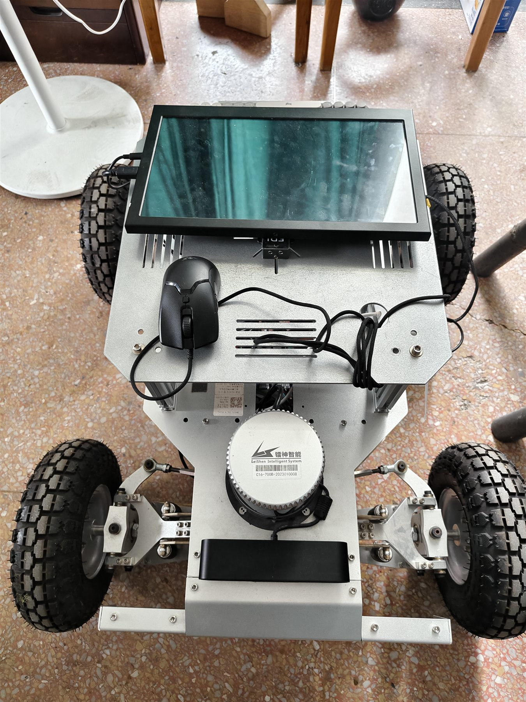
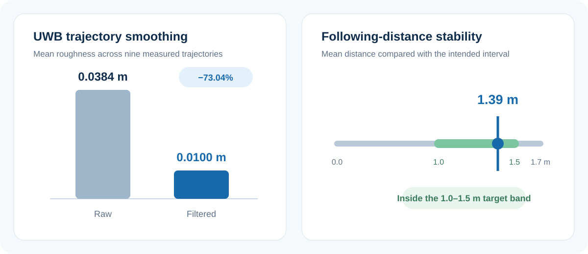
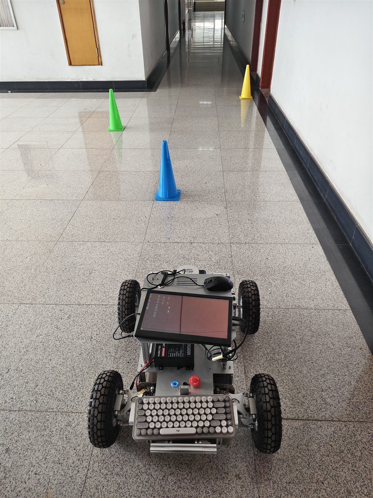
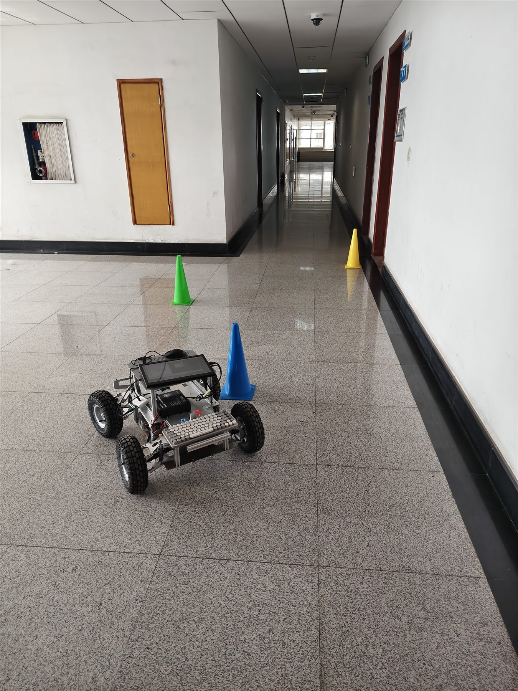

LiDAR · IMU · UWB
Observe the environment, robot motion, target bearing, and target distance.
A team-built indoor mobile-robot system that connects target localization, global-local planning, autonomous following, and dynamic obstacle avoidance in one ROS workflow.
The complete workflow was deployed on the final mobile platform and evaluated through repeated indoor experiments.
Evidence at a glance: nine UWB trajectory measurements, ten repeated navigation trials, a physical target-following test, and dynamic-obstacle experiments.
The project began with a conventional green folding cart. It served as the physical prototype for motorized drive installation, LiDAR placement, embedded control, onboard computing, and ROS communication.
The final Ackermann platform provided a repeatable base for deploying the complete software chain. The research focus remained the same throughout: connect perception, target positioning, path planning, obstacle avoidance, and chassis control into a working follow-me system.

Each module has a clear role, while ROS topics connect target state, robot pose, planning, and chassis commands.
Observe the environment, robot motion, target bearing, and target distance.
Localize the robot and stabilize the UWB target estimate with variable-step Kalman filtering.
Generate an efficient global route and react to nearby static or moving obstacles.
Convert velocity commands into steering and encoder-based closed-loop drive control.
/uwb_imu_node→/uwb_tracker→/follower→/move_baseThe final platform supplied stable steering, sensing coverage, onboard computing, and repeatable motion for quantitative evaluation.

A* supplied global key nodes; DWA evaluated local, collision-free trajectories while remaining consistent with the global route.
The team introduced target-oriented direction screening, obstacle-density-based heuristic adjustment, and two-stage redundant-node removal. These changes reduced unnecessary exploration and generated smoother routes with fewer turns.
The team added a target-distance term and dynamically adjusted obstacle-avoidance weights. Open space favored efficient forward motion; obstacle proximity increased the emphasis on safety and clearance.
In the 45×45 grid environment, explored nodes decreased from 785 to 202, runtime from 0.1321 s to 0.0473 s, and cumulative turning angle from 540° to 218.68°.
Two vehicle-mounted UWB base stations received signals from one target-worn tag. AoA supplied relative bearing, ranging supplied distance, and the front/rear receiver strategy extended directional coverage around the robot. LiDAR-based local planning remained active for unexpected obstacles.
Match the tag, solve bearing and distance, then smooth the target state with variable-step Kalman filtering.
Compare the following distance with the safety threshold before generating motion commands.
Follow directly when the target is ahead; when it moves behind, turn until it returns to the forward field.
Fuse the target command with global navigation and LiDAR-based local obstacle avoidance.
The final evaluation combined repeated measurements with physical indoor experiments.



As project lead, I coordinated the technical roadmap, module interfaces, experiment schedule, and final presentation. The core localization, planning, following, and control modules were developed, integrated, and debugged collaboratively by the project team.